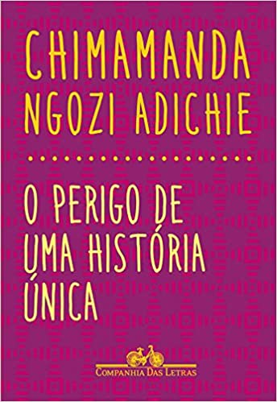

A parte que vem antes
"Murilo Mendes escreveu no seu livrinho A idade do Serrote: 'quando eu não era antropófago - Quando eu não devorava livros - Pois livros são feitos com a carne e o sangue dos que os escrevem?'' Há livros que eu simplesmente leio - mas eles ficam fora de mim. E há livros que devoro - são incorporrados, passam a fazer a parte do meu corpo, circulam no meu sangue. Então, falar sobre este livro é falar sobre o que ele fez comigo. Pediram-me que escrevessse sobre este livro. Escreverei,então, sobre mim mesmo, depois de lê-lo e devorá-lo."
Rubem Alves, no prefácio do livro "Conflitos na escola: modos de transformar" relatou a partir da leitura do livro de Murilo Mendes a experiência que as coisas,todas elas, podem nos causar. As obras de arte, independente da linguagem (música, dança,pintura,performance, escultura, dentre outras) tem o poder de nos despertar, causar encantamentos, inquietações, deslocamentos. Ferreira Gullar já havia dito que "a arte existe porque a vida não basta" e neste contexto de pandemia e isolamento social, constatou-se que, para manter minimamente a sanidade das pessoas, a arte seria o único caminho possível
Há alguns anos, estimulada por um questionamento de um estudante, decidi construir um repertório que possibilitasse fazer com que o meu agir estivesse de acordo com os meus valores, com o que acredito. Este projeto tem o objetivo de compartilhar referência de autoras, escritoras e escritores negros para pensar além do que Chimamanda Adichie chamou de "o perigo da história única" e como educadores precisamos diminuir a distância entre aquilo que falamos e aquilo que somos, como diria Paulo Freire. Por isso, o objetivo deste trabalho é compartilhar como a literatura e como essas narrativas têm me ajudado a pensar, refletir as questões raciais na sociedade e como isso se reflete nos ambientes escolares.
Nos últimos anos no Brasil, principalmente por conta das mobilizações, dos movimentos sociais,em especial, do movimento negro pela luta de representividade e ocupação de espaços até então pouco visibilizados. Pode-se afirmar que o acesso aos trabalhos produzidos escritoras e escritores negros têm conquistado mais espaços. Ainda é pouco, mas sinaliza um caminho que pode ser percorrido por nós.
Este trabalho também se justifica por compreender que é na escola pública que estudantes negros têm seu primeiro acesso aos livros, principalmente à literatura. Por compreender que a relação que se constrói com as histórias quando o leitor tem a possibilidade de se ver nela, o poder da experiência estética passa a atingir outros patamates enquanto potência de encontro e sensibilidade.
O perigo da história única - Chimamanda Ngozi Adichie
Essa palestra foi realizada em 2009 para o TED. Só na plataforma do TED, o vídeo já teve mais de 22 milhões de visualizações, sem contar os vídeos em outras plataformas. Em 2019 o texto da palestra foi adaptado em livro pela Companhia das Letras.
